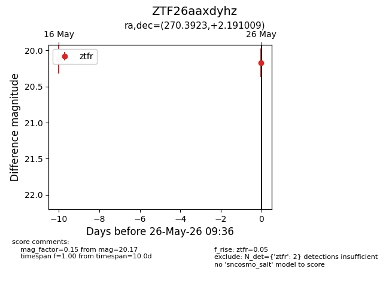
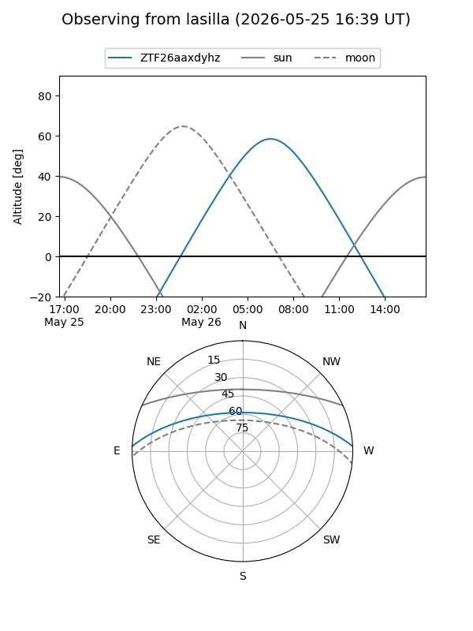
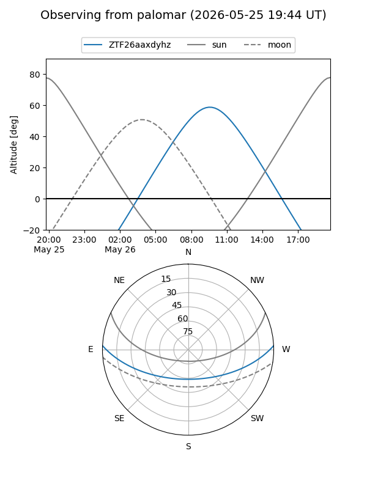

ZTF26aaxdyhz
Target ZTF26aaxdyhz at 2026-05-26 09:38
Aliases and brokers:
lsst-FINK: link
lsst-Lasair: link
lsst-ALeRCE: link
ztf-FINK: link
ztf-Lasair: link
ztf-ALeRCE: link
alt names
ZTF26aaxdyhz (ztf,fink_ztf)
Coordinates:
equatorial (ra, dec) = 270.3923,+2.19101
equatorial (HMS+DMS) = 18:01:34.14,+02:11:27.63
galactic (l, b) = (29.1591,+12.08859)
Flags:
Photometry:
last ztfr=20.17
2 ztfr detections
Lightcurve

Visibility


Additional plots